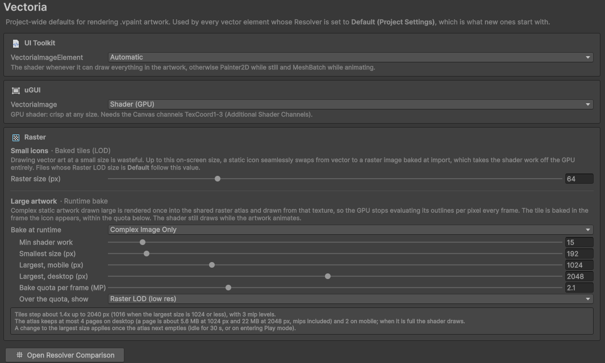

Settings
Project-wide defaults.
Open Tools › Vectoria › Vectoria Settings. It opens in Project Settings, under Vectoria. The values are stored in a VectoriaSettings asset. They are the defaults for every element whose Resolver is set to Default (Project Settings).

Resolvers
| Setting | Default | Meaning |
|---|---|---|
| UI Toolkit › VectoriaImageElement | Automatic | The resolver for elements set to Default. The shader whenever it can draw everything in the artwork, otherwise a fallback. See Automatic. |
| uGUI › VectoriaImage | Shader (GPU) | The resolver for images set to Default. Crisp at any size, and it needs the Canvas channels. |
The Open Resolver Comparison button at the bottom opens the comparison window.
Raster
Small icons (baked tiles, LOD). A static icon at or below this on-screen size (in physical pixels, so a 2x display counts double) swaps from vector to a raster image baked at import, which takes the shader work off the GPU.
| Setting | Default | Meaning |
|---|---|---|
| Raster size (px) | 64 | The Raster LOD size, 4 to 256. Files whose own Raster size is Default follow this value. See Raster LOD. |
Large artwork (runtime bake). Complex static artwork drawn large is rendered once into the shared raster atlas and drawn from that texture, so the GPU stops evaluating its outlines per pixel. The tile is baked in the frame the icon appears, within the quota below. The shader still draws while the artwork animates. See Runtime Raster.
| Setting | Default | Meaning |
|---|---|---|
| Bake at runtime | Complex Image Only | Disabled: nothing is baked. Complex Image Only: only artwork whose shader work reaches the minimum. Always Enabled: all static artwork in the size range. |
| Min shader work | 15 | The least shader work, in units, that gets a tile. The cost meter in the painter shows the units. Raise it on fast hardware, or when memory is short. Lower it on slow GPUs. |
| Smallest size (px) | 192 | The smallest on-screen size that gets a tile. |
| Largest, mobile (px) | 1024 | The largest tile on mobile. |
| Largest, desktop (px) | 2048 | The largest tile on desktop. |
| Bake quota per frame (MP) | 2.1 | How many megapixels of tiles may be baked in the frame an icon appears (2.1 is about one 1450 px tile). The first tile of a frame always fits. The rest wait for their turn, one per frame. 0 bakes nothing in the first frame. |
| Over the quota, show | Raster LOD (low res) | What an icon shows while its tile waits. Raster LOD (low res): the small tile baked at import (the shader when the artwork has none). Shader (full cost): the shader draws it as before. Invisible: nothing until the tile is ready. |
Tiles step about 1.4x in size. The atlas keeps at most 4 pages on desktop and 2 on mobile, and when it is full the shader keeps drawing. A change to the largest size applies once the atlas next empties (idle for 30 seconds, or on entering Play mode).